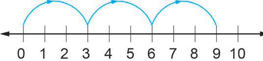

Example 3
Write down the multiples of 3 using the following figure.

Solution
Starting from 0 move three successive steps.

Therefore, the multiples of 3 are 3, 6, 9, . . .
Write down the multiples of 3 using the following figure.
Starting from 0 move three successive steps.

Therefore, the multiples of 3 are 3, 6, 9, . . .